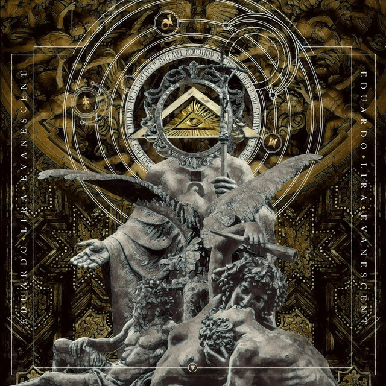

“Another Dream” é seu mais recente álbum com nove faixas, conta as participações do
guitarrista americano Greg Howe, na música “Another Dream” e Edu Ardanuy na faixa “Captain Caveman”, tem
influencias de Jazz/Rock e vem conquistando fãs de guitarra por todos os lugares.
Instrumental
O melhor do Instrumental
Bandas com trabalho instrumental
Eduardo Lira
Guitardate in Concert tem a proposta de trazer um pocket show instrumental focando guitarristas. Hoje trazemos o fantástico Eduardo lira apresentando seu primeiro Album, o Aftermath.
The First Concept
Primeiro álbum do guitarrista Brasileiro, lançado em 2016. Eduardo conta com a participação de músicos renomados do Rock / Heavy Metal nacional. Em “Sunrise”, tem a participação do baixista Andria Busic (Dr.Sin), na faixa “Catharsis”, é a vez de Felipe Andreoli (Angra) assumir as quatro cordas e em “Raining Day”, o tecladista Rodrigo Boechat (SoulSpell) marca presença.
Aftermath
Segundo CD solo instrumental do guitarrista Eduardo Lira. Aftermath, faixa título conta ainda com a presença especial do músico Fabio Carito (Warrel Dane, Confessori, Instincted.

Evanescent
O álbum é o terceiro trabalho de estúdio de Eduardo Lira, e possui dez faixas, sendo a primeira delas um tributo a Johann Sebastian Bach, compositor alemão da peça “Come, Sweet Death“, que abre o disco.
Eight Billion Souls
Quarto CD solo instrumental do guitarrista Eduardo Lira. 8BSouls, lançamento em Agosto de 2020. Edição especial com participação de seu Pai Osvaldo Barbosa e Filho Eduardo "Lira" Barbosa. .